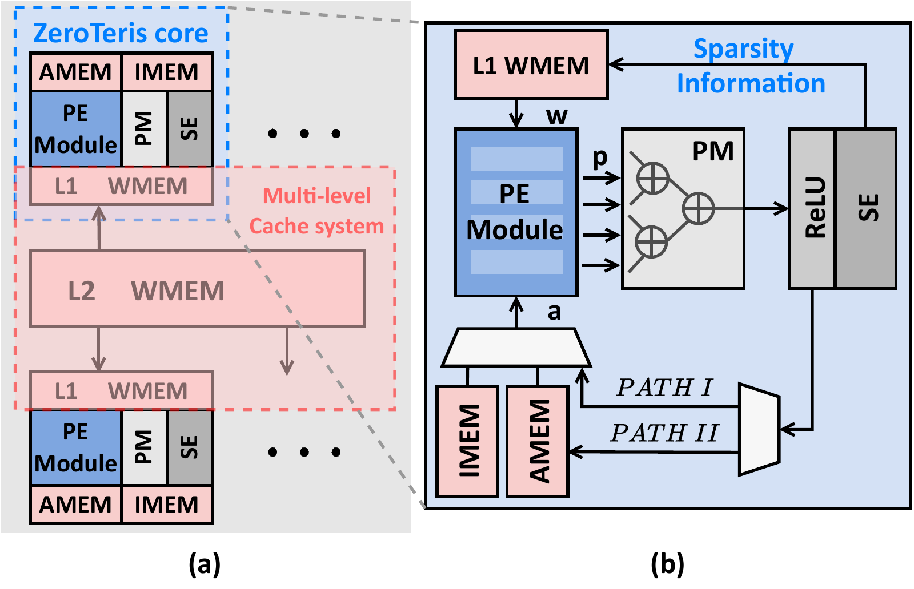
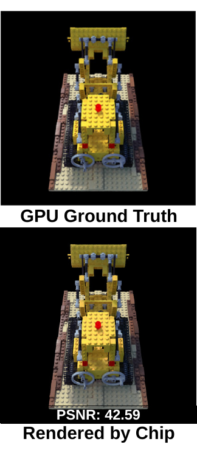
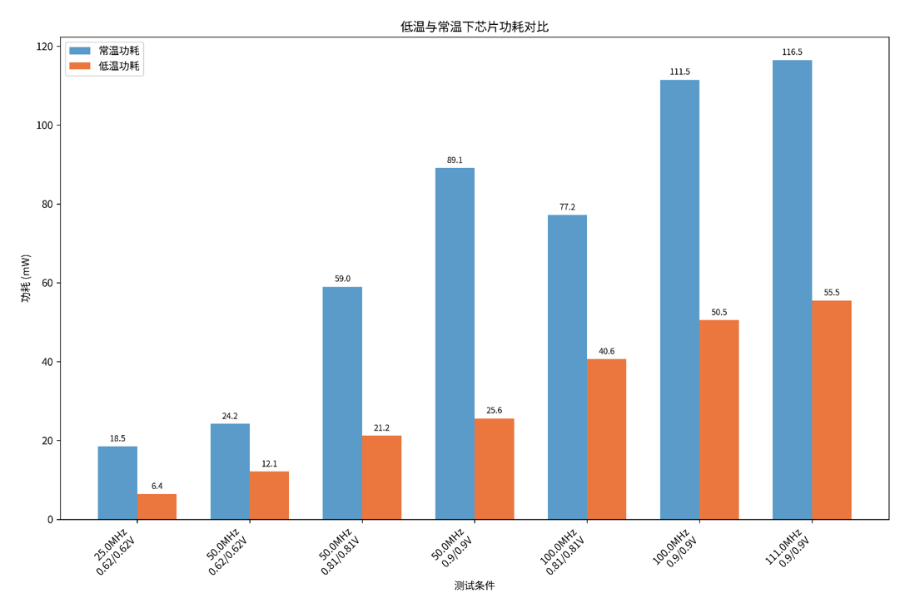
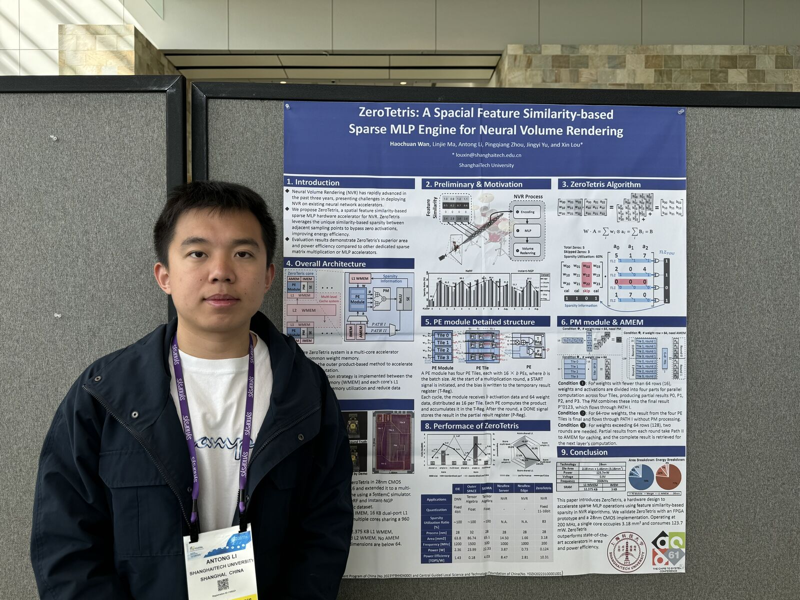

ZeroTetris
面向神经体渲染的稀疏 MLP 加速器，利用空间相似性引发的激活稀疏跳过无效计算。完成 HLMC 28nm 全流程流片、芯片实测与深低温表征，成果发表于 IEEE TCAD（共同第一作者）与 DAC 2024。 A sparse MLP accelerator for neural volume rendering that skips ineffectual computation by exploiting activation sparsity induced by spatial similarity. Taped out in HLMC 28nm, measured on silicon and characterized down to cryogenic temperatures. Published in IEEE TCAD (co-first author) and DAC 2024.
我的边界Scope of my contribution
- 独立完成Solely mine
- 板级测试系统（PC → PCIe → XDMA → 芯片）与 C++ 主机驱动；自定义 EDR 帧格式；深低温测试平台搭建与全部表征数据。 The board-level test system (PC → PCIe → XDMA → chip) and its C++ host driver; the custom EDR frame format; the cryogenic test rig and all characterization data.
- 主要负责Primarily mine
- 稀疏编码器 (SE) 与部分结果合并器 (PM) 等核心 RTL 模块；从 FP32 参考模型到芯片端定点的量化部署链路。 Core RTL blocks including the sparse encoder (SE) and partial-result merger (PM); the quantization deployment path from the FP32 reference model to on-chip fixed point.
- 参与而非主导Participated, did not own
- Synopsys DC 综合、ICC2 布局布线与时序收敛为团队协作完成，本人参与其中，并非独立负责整个后端流程。 DC synthesis, ICC2 place-and-route and timing closure were a team effort in which I took part; I did not own the backend flow end to end.
关键结果Key results
| 指标Metric | 数值Value | 口径Provenance |
|---|---|---|
| Die 面积Die area | 3.18 mm² (core 3.02 mm²) | 流片taped out |
| 工作范围Operating range | 50 – 125 MHz @ 0.62 – 0.9 V | 实测measured |
| 功耗Power | 25.92 – 139.59 mW | 实测measured |
| 常温能效Efficiency, room temp. | 9.01 TOPS/W | 实测measured |
| 渲染精度Render quality | PSNR 42.59 dB | 芯片渲染on-chip render |
| 最低测试温度Lowest temperature | −167 °C | 实测measured |
| 低温最优能效Best cryogenic efficiency | 26.84 TOPS/W @ −100 °C / 0.58 V / 25 MHz | 实测measured |
架构Architecture
神经体渲染中，空间上相邻的采样点会激发高度相似的中间激活。ZeroTetris 把这种相似性转成结构化的激活稀疏，用稀疏编码器 (SE) 在数据进入 MLP 阵列前筛掉无效项，再由部分结果合并器 (PM) 把分散的部分和重新拼回完整输出。由此跳过的不仅是乘法运算，还包括相应的取数与写回操作。 In neural volume rendering, spatially adjacent sample points excite highly similar intermediate activations. ZeroTetris turns that similarity into structured activation sparsity: a sparse encoder (SE) filters ineffectual entries before data enters the MLP array, and a partial-result merger (PM) reassembles the scattered partial sums into complete outputs. What is skipped comprises not only the multiplications but the corresponding fetches and write-backs.

芯片实测Silicon measurement
测试系统由本人从零搭建：PC 经 PCIe 与 XDMA 直连芯片，主机侧配套 C++ 驱动。帧格式自定义了一套 EDR，包含 3 bit 指数加 16 bit 尾数的浮点、Q8.16 定点，以及 2×2 的 RGBA 打包，其目的是使单次 DMA 传输尽可能对齐芯片内部的数据组织方式。 The test system was built from scratch: PC to chip over PCIe and XDMA, with an accompanying C++ host driver. The frame format is a custom EDR layout comprising a 3-bit-exponent / 16-bit-mantissa float, Q8.16 fixed point and 2×2 RGBA packing, so that a single DMA transfer aligns as closely as possible with the internal data organization of the chip.
从首次上电失败到 100 MHz 整图渲染From a failed first power-up to a full frame at 100 MHz
芯片首次上电时，50 MHz 下的渲染结果即为错误，且表现为数值不符而非图像异常。此类故障的排查难点在于，缺陷可能位于链路上的任一环节：主机驱动、DMA、帧格式解析、芯片内部数据通路，或采样时序。 On first power-up the chip produced incorrect results at 50 MHz, manifesting as numerical mismatch rather than visual corruption. The difficulty of this failure mode is that the fault may reside anywhere along the chain: the host driver, DMA, frame parsing, the on-chip datapath, or sampling timing.
最终定位于接口采样时序。解决方案是引入时钟相位调节流程：逐档扫描相位，每档执行一次完整渲染并与 golden 比对，据此确定可用的相位窗口，取窗口中心作为工作点。相位窗口稳定后即可提升工作频率，最终在 100 MHz 下完成 800×800 整图渲染。 The root cause was interface sampling timing. The remedy was a clock-phase calibration procedure: phases are swept step by step, a full render is executed and compared against golden at each step, the window of working phases is thereby determined, and the centre of that window is taken as the operating point. Once the phase window was stable the frequency could be raised, yielding a complete 800×800 render at 100 MHz.



量化部署Quantization
从 Python FP32 参考模型到芯片端是一条完整的定点部署链路，位宽 11 – 16 bit 混合定点，按层、按数据流类型分别分配。权重、激活与累加器对量化误差的敏感度不同，采用统一位宽将导致面积浪费或精度损失。最终实测渲染 PSNR 42.59 dB，相对 FP32 GPU 基线基本无损。 Between the Python FP32 reference model and what runs on the chip sits a complete fixed-point deployment path, using 11–16 bit mixed fixed point assigned per layer and per dataflow type. Weights, activations and accumulators differ in their tolerance to quantization error, so a uniform width either wastes area or sacrifices accuracy. Measured render quality came out at PSNR 42.59 dB, essentially lossless against the FP32 GPU baseline.
深低温特性表征Cryogenic characterization
低温测试平台由本人搭建，最低测试温度 −167 °C。开展该表征的动机在于：CMOS 在低温下载流子迁移率上升、亚阈值摆幅变陡，理论上同一频率可在更低电压下达成，而功耗与电压呈平方关系。但该收益的实际幅度及其拐点位置只能通过实测确定。 The cryogenic rig was built in-house, reaching −167 °C. The motivation for this characterization is that in CMOS at low temperature carrier mobility rises and subthreshold swing steepens, so in principle the same frequency is attainable at a lower voltage, while power scales with the square of voltage. The actual magnitude of that gain, and the point at which it turns over, can be established only by measurement.
- 同频同压对照。固定 111 MHz @ 0.9 V，功耗从常温的 116.5 mW 降到 55.5 mW，下降 52%。该数据为纯粹的温度收益，未借助电压缩放。 Same frequency, same voltage. Held at 111 MHz @ 0.9 V, power drops from 116.5 mW at room temperature to 55.5 mW, a 52% reduction. This figure isolates the temperature effect, with no voltage scaling applied.
- 最优工作点。在 −100 °C / 0.58 V / 25 MHz 下能效达 26.84 TOPS/W，相对常温最优点提升 3.19×。 Best operating point. At −100 °C / 0.58 V / 25 MHz, efficiency reaches 26.84 TOPS/W, which is 3.19× the best room-temperature point.


相关论文Related publications
- ZeroTetris: A 9.01 TOPS/W Similarity-based Sparse MLP Engine for Neural Volume Rendering — IEEE TCAD，2026 · CCF-A · 共同第一作者 · Early Access, 2026 · CCF-A · co-first author · Early Access DOI
- ZeroTetris: A Similarity-based Sparse MLP Engine for Neural Volume Rendering — ACM/IEEE DAC 2024, No. 224 · CCF-A· CCF-A DOI
